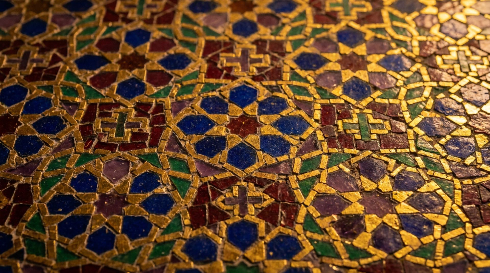

The pattern doesn't stop at the frame.
One photographed tessellation, gold leaf and lapis glass, sits at the center. Around it, a generative field of Truchet tiles keeps the geometry going — same palette, same logic, no more photograph. Move your cursor through it.

Fragment · gold tesserae, lapis and garnet glass · generated reference
01
Tesserae
Each generative tile is a Truchet square — two quarter-circle arcs, one of two rotations, chosen at random per cell so the field never repeats predictably.
02
Palette
Five inks sampled from the photograph: gold, lapis, garnet, emerald, ivory. The canvas field draws only from this set, so it reads as one continuous material.
03
Field
Tiles near the cursor rotate to face it, like glass catching candlelight as you pass — a ripple of reorientation, not redraw.
Recompose the field